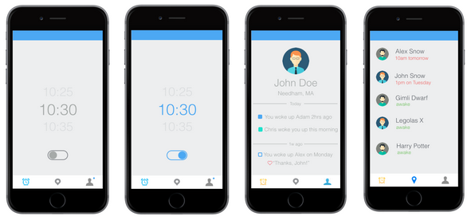

Human Factors Interface Design
Human Factors Interface Design (HFID) is a class that focuses on interface design in modern technology. My team is currently working on a product that will change the experience we have with alarm clocks. Although we are only one month into the class, here are some exaples of early storyboarding and UI prototyping. Visit our website to learn more about our progress.

Visit Website